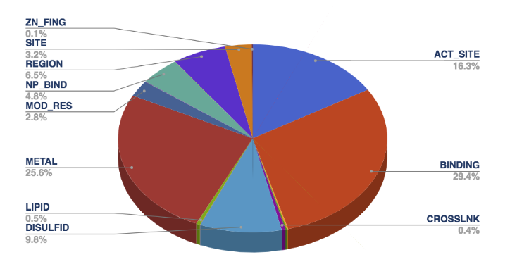
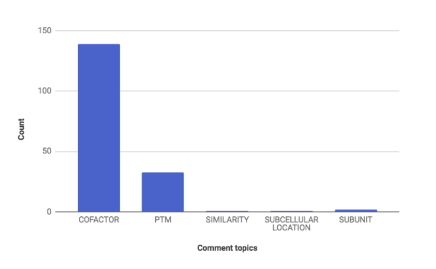
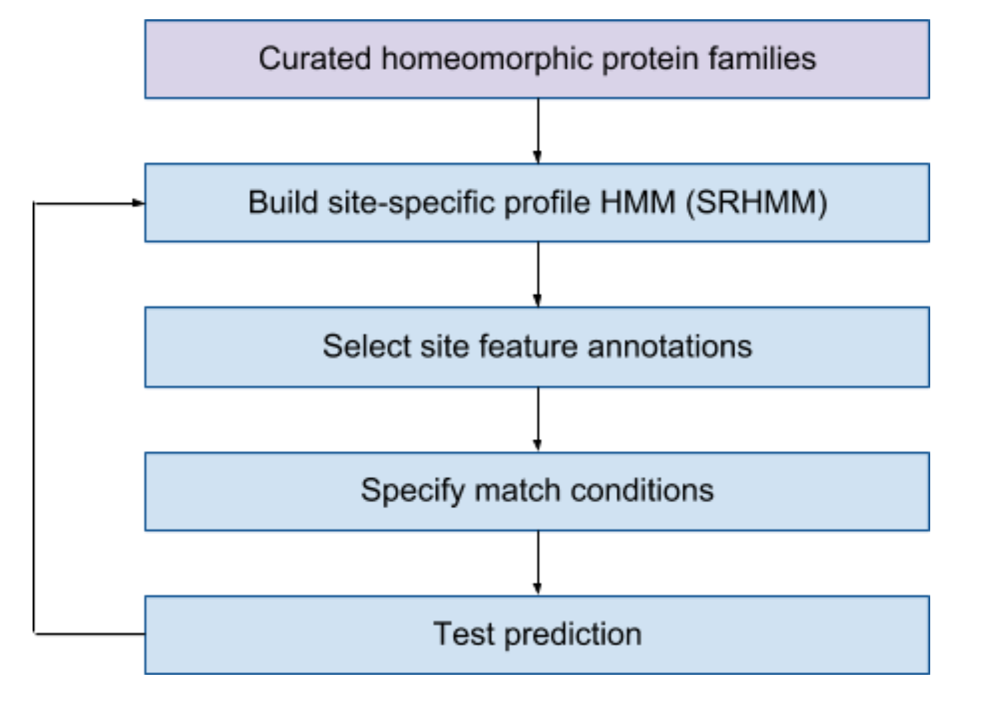
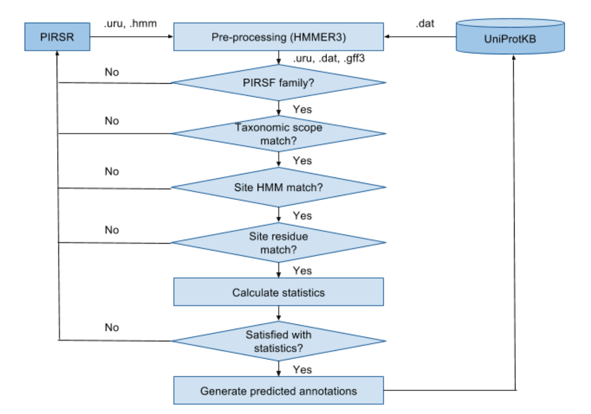
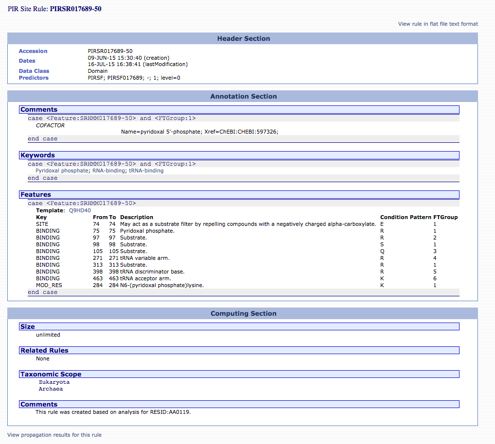
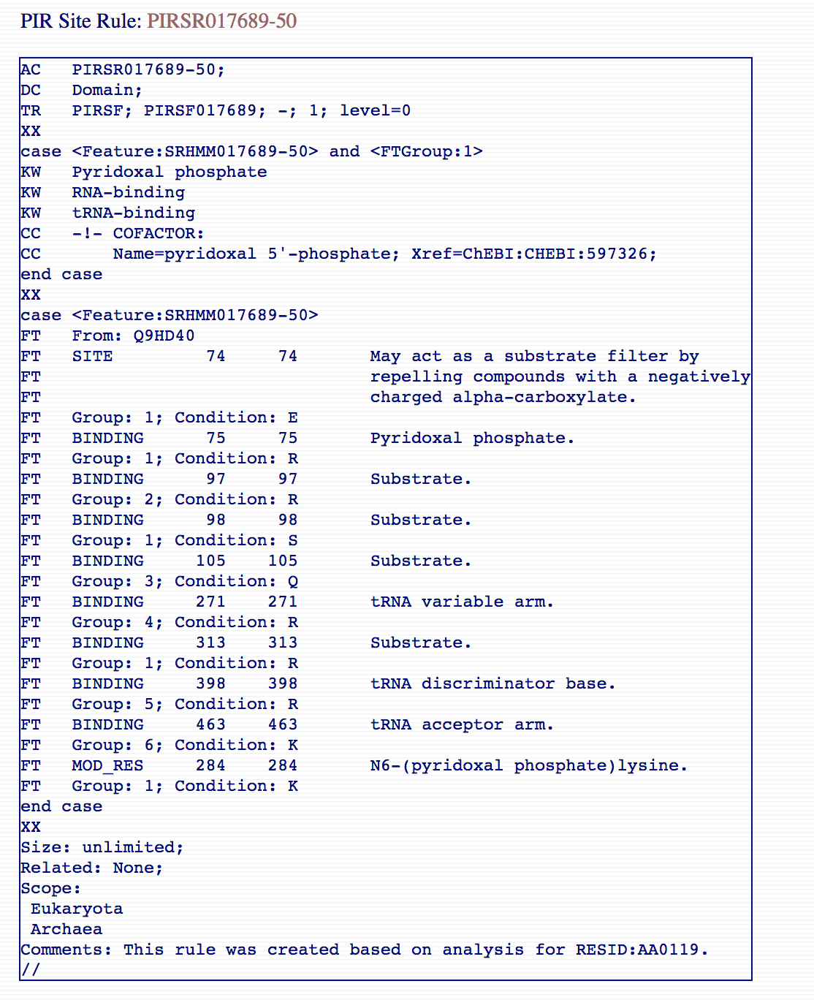

Protein Information Resource (PIR) has developed a
computational method that provides annotation of functional
residues within uncharacterized proteins using position-specific
site conditional template annotation rules (PIR Site Rule, PIRSR
in short) [1] manually curated and defined by structural
biologists on the basis of known structural and experimental
data.
Each rule specifies a set of test conditions such that
candidate uncharacterized proteins must pass that include:
- Match a whole protein based HMM.
- Organism in which the protein was found belongs to
certain taxonomic scope.
- Match a site-specific profile HMM.
- Match functionally and structurally characterized
residues of a manually curated template protein sequence.
Positive matches trigger the appropriate annotation for active
site residues, binding site residues, modified residues, or other
functionally important amino acids. This process has generated
high-quality annotations in UniProtKB/TrEMBL [2] (automatically
annotated but not reviewed) protein sequences. An example PIRSR
can be viewed at http://pir.georgetown.edu/cgi-bin/pirrule?id=PIRSR017689-50.
PIR Site rules are written in UniRule flat file format (.uru)
[3].
As of release 2017_10, PIR Site rules (total: 903) support
16 types of functional site annotations as shown below and
described below according to [4]:

- ACT_SITE: Amino acid(s) involved in the activity
of an enzyme.
- BINDING: Binding site for any chemical group
(co-enzyme, prosthetic group, etc.).
- CARBOHYD: Glycosylation site.
- CHAIN: Extent of a polypeptide chain in the
mature protein.
- CROSSLNK: Posttranslationally formed amino acid
bonds.
- DISULFID: Disulfide bond.
- DNA_BIND: Extent of a DNA-binding region.
- LIPID: Covalent binding of a lipid moiety.
- METAL: Binding site for a metal ion.
- MOD_RES: Posttranslational modification of a
residue.
- MOTIF: Short (up to 20 amino acids) sequence
motif of biological interest.
- NP_BIND: Extent of a nucleotide phosphate-binding
region.
- PROPEP: Extent of a propeptide.
- REGION: Extent of a region of interest in the
sequence.
- SITE: Any interesting single amino-acid site on
the sequence, that is not defined by another feature key.
- ZN_FING: Extent of a zinc finger region.
These are collected from template protein annotations and
specified in the rule. Other related UniProtKB annotations such
as keywords (KW) and comments (CC) are also collected from
template protein annotations and specified in the rule. The
keywords provide information that can be used to generate indexes
of the sequence entries based on functional, structural, or other
categories. Comments are free text comment on the protein entry.
PIRSR comments support 5 topics as shown in below and described
below below according to [4]:

- COFACTOR: Description of any non-protein
substance required by an enzyme for its catalytic activity.
- PTM: Description of any chemical alternation of a
polypeptide (proteolytic cleavage, amino acid modifications
including crosslinks). This topic complements information given
in the feature table or indicates polypeptide modifications for
which position-specific data is not available.
- SIMILARITY: Description of the similarity
(sequence or structural) of a protein with other proteins
- SUBCELLULAR LOCATION: Description of the
subcellular location of the chain/peptide/isoform.
- SUBUNIT: Description of the quaternary structure
of a protein and any kind of interactions with other proteins or
protein complexes; except for receptor-ligand interactions,
which are described in the topic FUNCTION.
PIRSRs are manually curated and defined by structural
biologists on the basis of known structural and experimental
data. The overall curation workflow is shown below. Internally,
we have built a web-based user interface to facilitate the
curation efforts.

Curated homeomorphic protein families (PIRSF)
PIRSRs are defined starting with curated PIRSF families
that contain at least one known 3D structure with experimentally
verified site information in published scientific literature.
PIRSF is a whole protein classification system that provides
comprehensive and non-overlapping clustering of UniProtKB
sequences into a hierarchical order to reflect their
evolutionary relationships. One of the proteins with known 3D
structure with experimentally verified site information in
published scientific literature would be selected as template
protein.
Build site-specific profile HMM
A set of UniProtKB/Swiss-Prot [2] (manually annotated and
reviewed by human experts) proteins in a given PIRSF
homeomorphic protein family including the template protein is
used to create multiple sequence alignment. The alignment is
manually examined/edited by the curator to identify any
conserved sites as candidate site features. The finalized
multiple sequence alignment is used to build site-specific
profile HMM model (SRHMM) using HMMER3 [5].
Select site feature annotations
Various feature information about the candidate sites are
derived from the annotations of chosen template protein.
Specifically, they are the annotation fields: FT (features, see
feature types for details), CC (comments) and KW (keywords) in
UniProtKB/Swiss-Prot entries. Appropriate syntax and controlled
vocabulary are used for site description and evidence
attribution.
Specify match conditions
A set of match conditions are defined in the rule and must
be met to enable prediction of annotations in the rule to a
target protein sequence:
- Family HMM: The target protein sequence must
match the PIRSF/InterPro family HMM specified in the rule. This
is defined as "trigger" condition in the rule.
- Taxonomic scope: Rule can only be applied to a
certain organism, which is defined as Kingdom/sub-taxon in the
"scope" section of the rule.
- Site HMM: Family HMM may not be suitable as a
discriminator for a particular site of interest. The target
protein must also match the site-specific profile HMM model
defined in the rule. This is defined as "feature group"
condition in the rule.
- Site residue: The target and template protein
sequences are aligned to the site-specific profile HMM. Target
residues that match those defined in the rule are eligible for
prediction. This is defined as "feature table" condition in the
rule.
Test Prediction
The curated PIRSR is applied to the UniProt/Swiss-Prot
entries of the same PIRSF/InterPro family to calculate the True
Positives (TPs) (annotations exist in Swiss-Prot entries and is
predicated by the rule), False Positives (FPs) (annotations do
not exist in the Swiss_Prot entries but is predicated by the
rule) as well as the precision and confidence as defined in the
formula 1 of [6]. The prediction algorithm is shown below.

According to the statistics of test prediction run, the rule is
further refined iteratively. Once it is ready, it will be put
into production to annotate UniProtKB/TrEMBL entries. An example
production rule is shown below.

